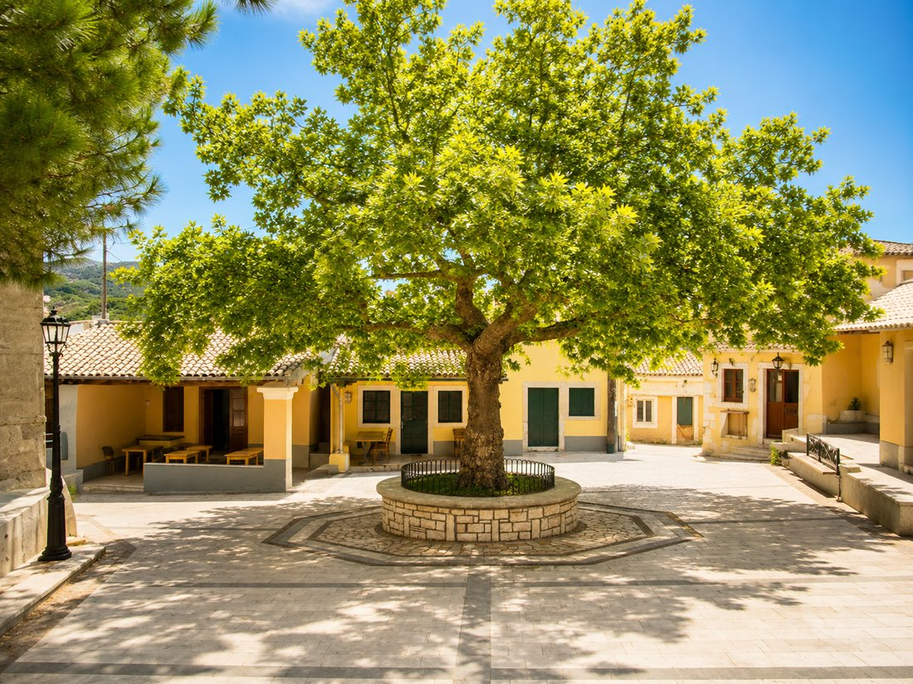
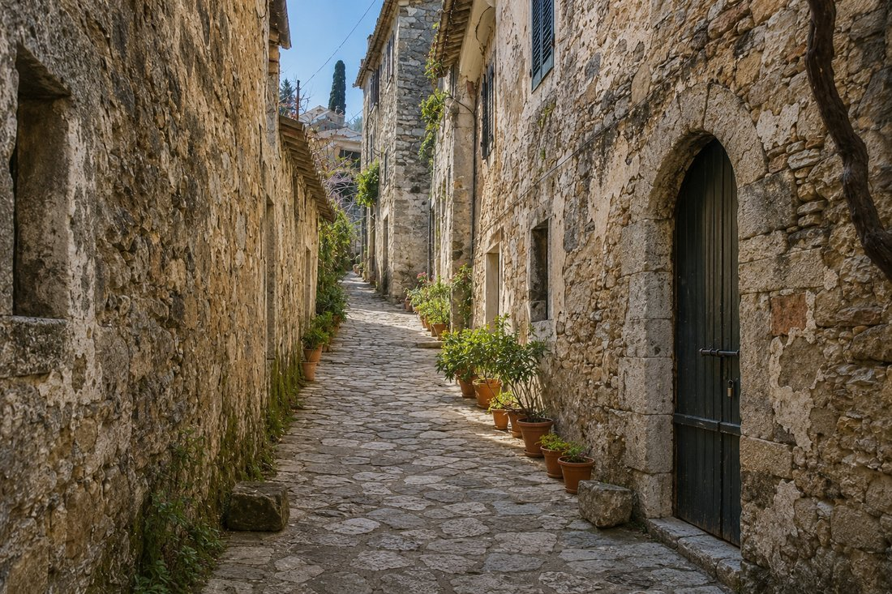
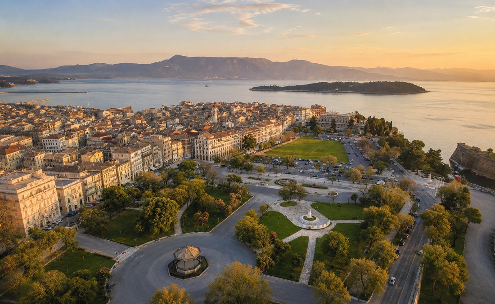
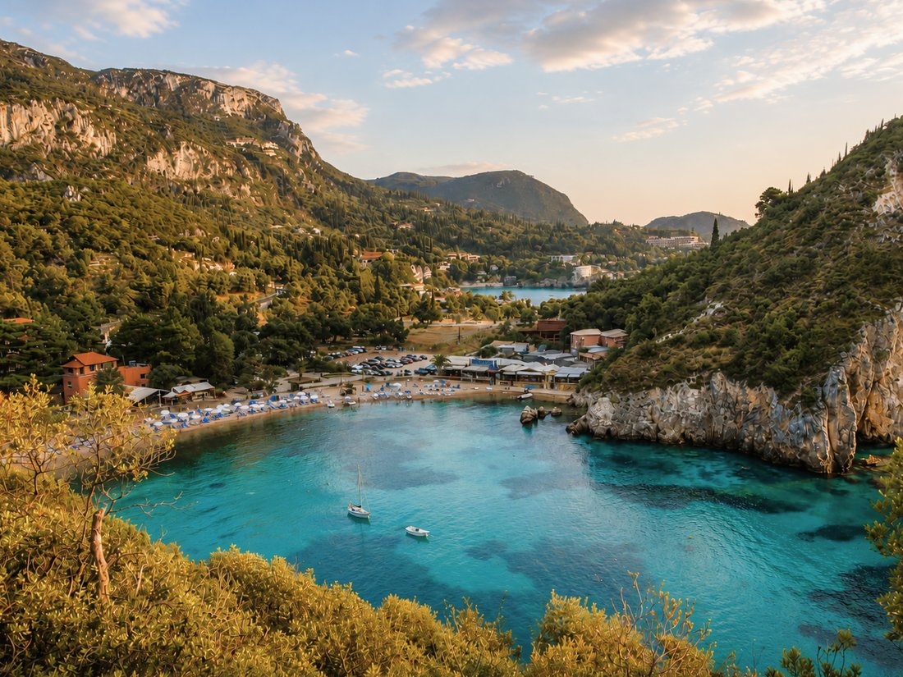
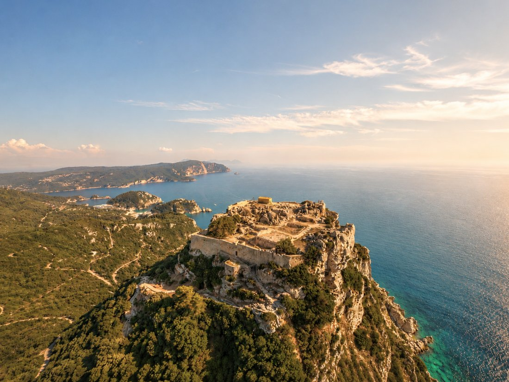

The Village
Liapades is one of Corfu's oldest villages, set on the island's north-west coast and surrounded by one of its richest and most varied stretches of coastline.
The village dates back to at least the 16th century, with roots reaching further into the Byzantine era. Narrow cobbled lanes wind between old stone houses and Venetian-influenced architecture. Liapades has largely retained the character of an old Corfiot village rather than being reshaped around mass tourism. Some traditional houses still retain oval doorways and family crests.
Just a seven-minute walk from the house, the peaceful village square lies beneath the shade of a magnificent plane tree. Here you will find traditional kafeneia, charming local shops and the Church of Agia Anastasia, offering an authentic glimpse into everyday life in Liapades.

The historic 16th-century Church of Agia Anastasia is part of the village's long religious and cultural history and contains old icons and religious paintings. Nearby, a tiny grill house has no indoor dining room. The tables belong outside.
The nearest beach is approximately fifteen minutes' walk away, while the wider Liapades coastline is made up of fourteen beaches and four sea caves. Liapades Bay lies directly beside Paleokastritsa Bay, forming part of the same dramatic stretch of north-west Corfu coastline. Explore our coastline →
At the table
Corfu has its own flavours and its own pace of eating.
You may find rooster pastitsada, sofrito, cod bianco or bourdetto, alongside moussaka and pastitsio.
Local fish such as gavros, marida, gopa, barbouni and sardines are often best eaten simply and shared.
Noumboulo, kumquat in many forms, Kakotrygis wine and Corfiot beers all belong to the island's table.
Dinner is late. Plates are shared. Nobody seems particularly worried about the time.

Follow the paths
Old pathways and walking routes cross Liapades and the surrounding landscape.
Some are everyday village shortcuts. Others lead through olive trees, between houses, towards beaches and viewpoints.

A little further

Corfu Town
Corfu Town is a place to wander slowly. Venetian façades, narrow lanes and shaded arcades lead towards the Liston and the broad Spianada, while the Old and New Fortresses frame the town's long relationship with the sea. Small churches, hidden squares, flower-filled balconies and cafés spilling onto the pavements give the historic centre a lived-in character. It is equally rewarding in the morning, when the streets are quiet, and in the evening, when the arcades fill and the town settles into the gentle rhythm of dinner and a late walk.

Paleokastritsa
Paleokastritsa is known for its monastery, steep green hills and a coastline shaped by small bays, rocky coves and clear water. It is a beautiful place to combine a swim with a walk, a boat trip or a quiet visit to the monastery above the sea.

Angelokastro
Angelokastro, meaning "the Castle of the Angels", is a Byzantine fortress set high above Corfu's north-west coast. The climb is rewarded with wide views over the sea, the surrounding hills and the villages below, making it one of the most memorable historic sites in the area.
Distances from the house
Eating, swimming and leisure
Shops and everyday essentials
Transport and wider Corfu
Distances are approximate and may vary according to the exact route.